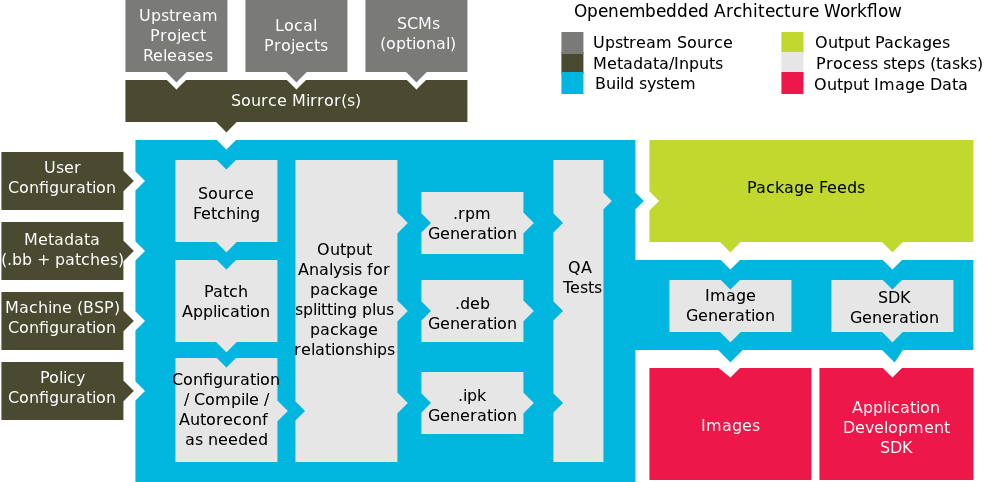

Welcome to the Yocto Project! The Yocto Project is an open-source collaboration project focused on embedded Linux developers. Among other things, the Yocto Project uses a build system based on the Poky project to construct complete Linux images. The Poky project, in turn, draws from and contributes back to the OpenEmbedded project.
If you don't have a system that runs Linux and you want to give the Yocto Project a test run, you might consider using the Yocto Project Build Appliance. The Build Appliance allows you to build and boot a custom embedded Linux image with the Yocto Project using a non-Linux development system. See the Yocto Project Build Appliance for more information.
On the other hand, if you know all about open-source development, Linux development environments, Git source repositories and the like and you just want some quick information that lets you try out the Yocto Project on your Linux system, skip right to the "Super User" section at the end of this quick start.
For the rest of you, this short document will give you some basic information about the environment and let you experience it in its simplest form. After reading this document, you will have a basic understanding of what the Yocto Project is and how to use some of its core components. This document steps you through a simple example showing you how to build a small image and run it using the Quick EMUlator (QEMU emulator).
For more detailed information on the Yocto Project, you should check out these resources:
Website: The Yocto Project Website provides the latest builds, breaking news, full development documentation, and a rich Yocto Project Development Community into which you can tap.
FAQs: Lists commonly asked Yocto Project questions and answers. You can find two FAQs: Yocto Project FAQ on a wiki, and the "FAQ" chapter in the Yocto Project Reference Manual.
Developer Screencast: The Getting Started with the Yocto Project - New Developer Screencast Tutorial provides a 30-minute video for the user new to the Yocto Project but familiar with Linux build systems.
Note
Due to production processes, there could be differences between the Yocto Project documentation bundled in a released tarball and the Yocto Project Quick Start on the Yocto Project website. For the latest version of this manual, see the manual on the website.The Yocto Project through the OpenEmbedded build system provides an open source development environment targeting the ARM, MIPS, PowerPC and x86 architectures for a variety of platforms including x86-64 and emulated ones. You can use components from the Yocto Project to design, develop, build, debug, simulate, and test the complete software stack using Linux, the X Window System, GNOME Mobile-based application frameworks, and Qt frameworks.
|  |
The Yocto Project Development Environment
Here are some highlights for the Yocto Project:
Provides a recent Linux kernel along with a set of system commands and libraries suitable for the embedded environment.
Makes available system components such as X11, GTK+, Qt, Clutter, and SDL (among others) so you can create a rich user experience on devices that have display hardware. For devices that don't have a display or where you wish to use alternative UI frameworks, these components need not be installed.
Creates a focused and stable core compatible with the OpenEmbedded project with which you can easily and reliably build and develop.
Fully supports a wide range of hardware and device emulation through the QEMU Emulator.
The Yocto Project can generate images for many kinds of devices. However, the standard example machines target QEMU full-system emulation for x86, x86-64, ARM, MIPS, and PPC-based architectures as well as specific hardware such as the Intel® Desktop Board DH55TC. Because an image developed with the Yocto Project can boot inside a QEMU emulator, the development environment works nicely as a test platform for developing embedded software.
Another important Yocto Project feature is the Sato reference User Interface. This optional GNOME mobile-based UI, which is intended for devices with restricted screen sizes, sits neatly on top of a device using the GNOME Mobile Stack and provides a well-defined user experience. Implemented in its own layer, it makes it clear to developers how they can implement their own user interface on top of a Linux image created with the Yocto Project.
You need these things to develop in the Yocto Project environment:
A host system running a supported Linux distribution (i.e. recent releases of Fedora, openSUSE, CentOS, and Ubuntu). If the host system supports multiple cores and threads, you can configure the Yocto Project build system to decrease the time needed to build images significantly.
The right packages.
A release of the Yocto Project.
The Yocto Project team is continually verifying more and more Linux distributions with each release. In general, if you have the current release minus one of the following distributions you should have no problems.
Ubuntu
Fedora
openSUSE
CentOS
For a more detailed list of distributions that support the Yocto Project, see the "Supported Linux Distributions" section in the Yocto Project Reference Manual.
Note
For notes about using the Yocto Project on a RHEL 4-based host, see the BuildingOnRHEL4 wiki page.
The OpenEmbedded build system should be able to run on any modern distribution with Python 2.6 or 2.7. Earlier releases of Python are known to not work and the system does not support Python 3 at this time. This document assumes you are running one of the previously noted distributions on your Linux-based host systems.
Note
If you attempt to use a distribution not in the above list, you may or may not have success - you are venturing into untested territory. Refer to OE and Your Distro and Required Software for information for other distributions used with the OpenEmbedded project, which might be a starting point for exploration. If you go down this path, you should expect problems. When you do, please go to Yocto Project Bugzilla and submit a bug. We are interested in hearing about your experience.
Packages and package installation vary depending on your development system and on your intent. For example, if you want to build an image that can run on QEMU in graphical mode (a minimal, basic build requirement), then the number of packages is different than if you want to build an image on a headless system or build out the Yocto Project documentation set. Collectively, the number of required packages is large if you want to be able to cover all cases.
Note
In general, you need to have root access and then install the required packages. Thus, the commands in the following section may or may not work depending on whether or not your Linux distribution hassudo installed.
The next few sections list, by supported Linux Distributions, the required packages needed to build an image that runs on QEMU in graphical mode (e.g. essential plus graphics support).
For lists of required packages for other scenarios, see the "Required Packages for the Host Development System" section in the Yocto Project Reference Manual.
The essential packages you need for a supported Ubuntu distribution are shown in the following command:
$ sudo apt-get install gawk wget git-core diffstat unzip texinfo \
build-essential chrpath libsdl1.2-dev xterm
The essential packages you need for a supported Fedora distribution are shown in the following command:
$ sudo yum install gawk make wget tar bzip2 gzip python unzip perl patch \
diffutils diffstat git cpp gcc gcc-c++ eglibc-devel texinfo chrpath \
ccache SDL-devel xterm
The essential packages you need for a supported openSUSE distribution are shown in the following command:
$ sudo zypper install python gcc gcc-c++ git chrpath make wget python-xml \
diffstat texinfo python-curses libSDL-devel xterm
The essential packages you need for a supported CentOS distribution are shown in the following command:
$ sudo yum -y install gawk make wget tar bzip2 gzip python unzip perl patch \
diffutils diffstat git cpp gcc gcc-c++ glibc-devel texinfo chrpath SDL-devel xterm
Note
Depending on the CentOS version you are using, other requirements and dependencies might exist. For details, you should look at the CentOS sections on the Poky/GettingStarted/Dependencies wiki page.
You can download the latest Yocto Project release by going to the Yocto Project Download page. Just go to the page and click the "Yocto Downloads" link found in the "Download" navigation pane to the right to view all available Yocto Project releases. Then, click the "Yocto Release" link for the release you want from the list to begin the download. Nightly and developmental builds are also maintained at http://autobuilder.yoctoproject.org/nightly/. However, for this document a released version of Yocto Project is used.
You can also get the Yocto Project files you need by setting up (cloning in Git terms)
a local copy of the poky Git repository on your host development
system.
Doing so allows you to contribute back to the Yocto Project project.
For information on how to get set up using this method, see the
"Yocto
Project Release" item in the Yocto Project Development Manual.
Now that you have your system requirements in order, you can give the Yocto Project a try. This section presents some steps that let you do the following:
Build an image and run it in the QEMU emulator
Use a pre-built image and run it in the QEMU emulator
In the development environment you will need to build an image whenever you change hardware support, add or change system libraries, or add or change services that have dependencies.

Building an Image
Use the following commands to build your image. The OpenEmbedded build process creates an entire Linux distribution, including the toolchain, from source.
Note
The build process using Sato currently consumes about 50GB of disk space. To allow for variations in the build process and for future package expansion, we recommend having at least 100GB of free disk space.
Note
By default, the build process searches for source code using a pre-determined order through a set of locations. If you encounter problems with the build process finding and downloading source code, see the "How does the OpenEmbedded build system obtain source code and will it work behind my firewall or proxy server?" in the Yocto Project Reference Manual.
$ wget http://downloads.yoctoproject.org/releases/yocto/yocto-1.4/poky-tbd-8.0.tar.bz2
$ tar xjf poky-tbd-8.0.tar.bz2
$ cd poky-tbd-8.0
$ source oe-init-build-env
Tip
To help conserve disk space during builds, you can add the following statement
to your project's configuration file, which for this example
is poky-tbd-8.0-build/conf/local.conf.
Adding this statement deletes the work directory used for building a package
once the package is built.
INHERIT += "rm_work"
In the previous example, the first command retrieves the Yocto Project release tarball from the source repositories using the
wgetcommand. Alternatively, you can go to the Yocto Project website's Downloads page to retrieve the tarball.The second command extracts the files from the tarball and places them into a directory named
poky-tbd-8.0in the current directory.The third and fourth commands change the working directory to the Source Directory and run the Yocto Project environment setup script. Running this script defines OpenEmbedded build environment settings needed to complete the build. The script also creates the Build Directory, which is
buildin this case and is located in the Source Directory. After the script runs, your current working directory is set to the Build Directory. Later, when the build completes, the Build Directory contains all the files created during the build.
Take some time to examine your local.conf file
in your project's configuration directory, which is found in the Build Directory.
The defaults in that file should work fine.
However, there are some variables of interest at which you might look.
By default, the target architecture for the build is qemux86,
which produces an image that can be used in the QEMU emulator and is targeted at an
Intel® 32-bit based architecture.
To change this default, edit the value of the MACHINE variable
in the configuration file before launching the build.
Another couple of variables of interest are the
BB_NUMBER_THREADS and the
PARALLEL_MAKE variables.
By default, these variables are commented out.
However, if you have a multi-core CPU you might want to uncomment
the lines and set both variables equal to twice the number of your
host's processor cores.
Setting these variables can significantly shorten your build time.
Another consideration before you build is the package manager used when creating
the image.
By default, the OpenEmbedded build system uses the RPM package manager.
You can control this configuration by using the
PACKAGE_CLASSESpackage*.bbclass"
in the Yocto Project Reference Manual.
Continue with the following command to build an OS image for the target, which is
core-image-sato in this example.
For information on the -k option use the
bitbake --help command or see the
"BitBake" section in
the Yocto Project Reference Manual.
$ bitbake -k core-image-sato
Note
BitBake requires Python 2.6 or 2.7. For more information on this requirement, see the FAQ in the Yocto Project Reference Manual.
The final command runs the image:
$ runqemu qemux86
Note
Depending on the number of processors and cores, the amount or RAM, the speed of your Internet connection and other factors, the build process could take several hours the first time you run it. Subsequent builds run much faster since parts of the build are cached.
If hardware, libraries and services are stable, you can get started by using a pre-built binary of the filesystem image, kernel, and toolchain and run it using the QEMU emulator. This scenario is useful for developing application software.
Using a Pre-Built Image
For this scenario, you need to do several things:
Install the appropriate stand-alone toolchain tarball.
Download the pre-built image that will boot with QEMU. You need to be sure to get the QEMU image that matches your target machine’s architecture (e.g. x86, ARM, etc.).
Download the filesystem image for your target machine's architecture.
Set up the environment to emulate the hardware and then start the QEMU emulator.
You can download a tarball installer, which includes the pre-built toolchain, the
runqemu
script, and support files from the appropriate directory under
http://downloads.yoctoproject.org/releases/yocto/yocto-1.4/toolchain/.
Toolchains are available for 32-bit and 64-bit development systems from the
i686 and x86-64 directories, respectively.
Each type of development system supports five target architectures.
The names of the tarball installer scripts are such that a string representing the
host system appears first in the filename and then is immediately followed by a
string representing the target architecture.
poky-eglibc-<host_system>-<arch>-toolchain-gmae-<release>.sh
Where:
<host_system> is a string representing your development system:
i686 or x86_64.
<arch> is a string representing the target architecture:
i586, x86_64, powerpc, mips, or arm.
<release> is the version of Yocto Project.
For example, the following toolchain installer is for a 64-bit development host system and a 32-bit target architecture:
poky-eglibc-x86_64-i586-toolchain-gmae-1.4.sh
Toolchains are self-contained and by default are installed into /opt/poky.
However, when you run the toolchain installer, you can choose an installation directory.
The following command shows how to run the installer given a toolchain tarball for a 64-bit development host system and a 32-bit target architecture. You must change the permissions on the toolchain installer script so that it is executable.
The example assumes the toolchain installer is located in ~/Downloads/.
Note
If you do not have write permissions for the directory into which you are installing the toolchain, the toolchain installer notifies you and exits. Be sure you have write permissions in the directory and run the installer again.
$ ~/Downloads/poky-eglibc-x86_64-i586-toolchain-gmae-1.4.sh
For more information on how to install tarballs, see the "Using a Cross-Toolchain Tarball" and "Using BitBake and the Build Directory" sections in the Yocto Project Application Developer's Guide.
You can download the pre-built Linux kernel suitable for running in the QEMU emulator from
http://downloads.yoctoproject.org/releases/yocto/yocto-1.4/machines/qemu.
Be sure to use the kernel that matches the architecture you want to simulate.
Download areas exist for the five supported machine architectures:
qemuarm, qemumips, qemuppc,
qemux86, and qemux86-64.
Most kernel files have one of the following forms:
*zImage-qemu<arch>.bin
vmlinux-qemu<arch>.bin
Where:
<arch> is a string representing the target architecture:
x86, x86-64, ppc, mips, or arm.
You can learn more about downloading a Yocto Project kernel in the "Yocto Project Kernel" bulleted item in the Yocto Project Development Manual.
You can also download the filesystem image suitable for your target architecture from http://downloads.yoctoproject.org/releases/yocto/yocto-1.4/machines/qemu. Again, be sure to use the filesystem that matches the architecture you want to simulate.
The filesystem image has two tarball forms: ext3 and
tar.
You must use the ext3 form when booting an image using the
QEMU emulator.
The tar form can be flattened out in your host development system
and used for build purposes with the Yocto Project.
core-image-<profile>-qemu<arch>.ext3
core-image-<profile>-qemu<arch>.tar.bz2
Where:
<profile> is the filesystem image's profile:
lsb, lsb-dev, lsb-sdk, lsb-qt3, minimal, minimal-dev, sato, sato-dev, or sato-sdk.
For information on these types of image profiles, see the
"Images" chapter
in the Yocto Project Reference Manual.
<arch> is a string representing the target architecture:
x86, x86-64, ppc, mips, or arm.
Before you start the QEMU emulator, you need to set up the emulation environment. The following command form sets up the emulation environment.
$ source /opt/poky/1.4/environment-setup-<arch>-poky-linux-<if>
Where:
<arch> is a string representing the target architecture:
i586, x86_64, ppc603e, mips, or armv5te.
<if> is a string representing an embedded application binary interface.
Not all setup scripts include this string.
Finally, this command form invokes the QEMU emulator
$ runqemu <qemuarch> <kernel-image> <filesystem-image>
Where:
<qemuarch> is a string representing the target architecture: qemux86, qemux86-64,
qemuppc, qemumips, or qemuarm.
<kernel-image> is the architecture-specific kernel image.
<filesystem-image> is the .ext3 filesystem image.
Continuing with the example, the following two commands setup the emulation
environment and launch QEMU.
This example assumes the root filesystem (.ext3 file) and
the pre-built kernel image file both reside in your home directory.
The kernel and filesystem are for a 32-bit target architecture.
$ cd $HOME
$ source /opt/poky/1.4/environment-setup-i586-poky-linux
$ runqemu qemux86 bzImage-qemux86.bin \
core-image-sato-qemux86.ext3
The environment in which QEMU launches varies depending on the filesystem image and on the target architecture. For example, if you source the environment for the ARM target architecture and then boot the minimal QEMU image, the emulator comes up in a new shell in command-line mode. However, if you boot the SDK image, QEMU comes up with a GUI.
Note
Booting the PPC image results in QEMU launching in the same shell in command-line mode.
This section [1] gives you a minimal description of how to use the Yocto Project to build images for a BeagleBoard xM starting from scratch. The steps were performed on a 64-bit Ubuntu 10.04 system.
Set up your Source Directory one of two ways:
Tarball: Use if you want the latest stable release:
$ wget http://downloads.yoctoproject.org/releases/yocto/yocto-1.4/poky-tbd-8.0.tar.bz2 $ tar xvjf poky-tbd-8.0.tar.bz2Git Repository: Use if you want to work with cutting edge development content:
$ git clone git://git.yoctoproject.org/poky
The remainder of the section assumes the Git repository method.
You need some packages for everything to work. Rather than duplicate them here, look at the "The Packages" section earlier in this quick start.
From the parent directory your Source Directory, initialize your environment and provide a meaningful Build Directory name:
$ source poky/oe-init-build-env mybuilds
At this point, the mybuilds directory has been created for you
and it is now your current working directory.
If you don't provide your own directory name it defaults to build,
which is inside the Source Directory.
Initializing the build environment creates a conf/local.conf configuration file
in the Build Directory.
You need to manually edit this file to specify the machine you are building and to optimize
your build time.
Here are the minimal changes to make:
BB_NUMBER_THREADS = "8"
PARALLEL_MAKE = "-j 8"
MACHINE ?= "beagleboard"
Briefly, set BB_NUMBER_THREADS
and PARALLEL_MAKE to
twice your host processor's number of cores.
A good deal that goes into a Yocto Project build is simply downloading all of the source
tarballs.
Maybe you have been working with another build system (OpenEmbedded or Angstrom) for which
you've built up a sizable directory of source tarballs.
Or perhaps someone else has such a directory for which you have read access.
If so, you can save time by adding the PREMIRRORS
statement to your configuration file so that the build process checks
local directories first for existing tarballs before checking the
Internet.
Here is an efficient way to set it up in your local.conf
file:
SOURCE_MIRROR_URL ?= "file:///home/you/your-download-dir/"
INHERIT += "own-mirrors"
BB_GENERATE_MIRROR_TARBALLS = "1"
# BB_NO_NETWORK = "1"
At this point, you need to select an image to build for the BeagleBoard xM. If this is your first build using the Yocto Project, you should try the smallest and simplest image:
$ bitbake core-image-minimal
Now you just wait for the build to finish.
Here are some variations on the build process that could be helpful:
Fetch all the necessary sources without starting the build:
$ bitbake -c fetchall core-image-minimalThis variation guarantees that you have all the sources for that BitBake target should you disconnect from the net and want to do the build later offline.
Specify to continue the build even if BitBake encounters an error. By default, BitBake aborts the build when it encounters an error. This command keeps a faulty build going:
$ bitbake -k core-image-minimal
Once you have your image, you can take steps to load and boot it on the target hardware.
[1] Kudos and thanks to Robert P. J. Day of CrashCourse for providing the basis for this "expert" section with information from one of his wiki pages.